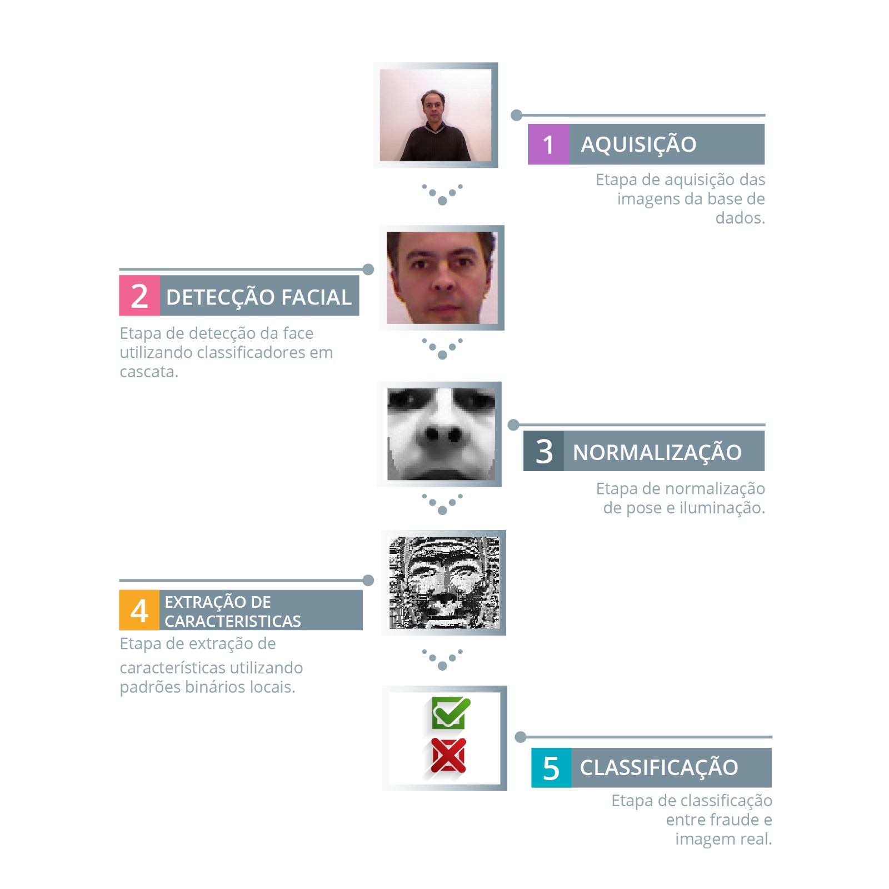
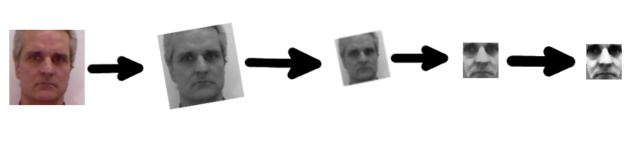
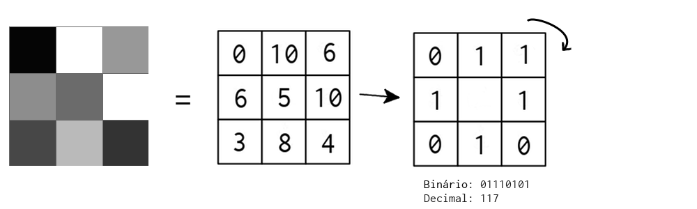
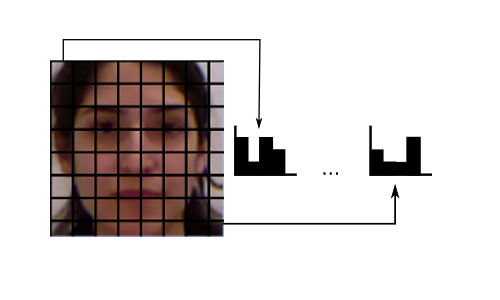
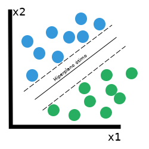

DETECÇÃO DE FRAUDES NA AUTENTICAÇÃO FACIAL MULTIMODAL
Universidade Federal da Bahia
MATA67 - PROJETO FINAL DE CURSO II
Adeilson Silva / @adeilsonsilva
Introdução
Sistemas biométricos são a prova de fraudes?
Peixoto B. et. al, "Face liveness detection under bad illumination conditions.", 2011
Määttä J. et. al, "Face spoofing detection from single images using micro-texture analysis.", IJCB 2011

Erdogmus N. et. al, "Spoofing in 2D Face Recognition with 3D Masks and Anti-spoofing with Kinect.", BTAS 2013
Sistema
Fluxo do sistema proposto
1. Aquisição das Imagens
2. Detecção Facial

3. Normalização
4. Extração de Características
Padrões Binários Locais
LBP - Local Binary Patterns
 4. Extração de Características
5. Classificação
Máquinas de Vetores de Suporte
SVM - Support Vector Machines
5. Classificação
Resultados
Resultados SEM normalização
| tipo de imagem | # imagens avaliadas | # faces detectadas | # corretas | # incorretas | Taxa de acerto |
|---|---|---|---|---|---|
| real | 15000 | 14673 | 14615 | 58 | 99.60% |
| falsa | 7500 | 7458 | 7228 | 230 | 96.91% |
Exemplos de classificações; incorretas na linha superior, corretas na linha inferior.
Resultados COM normalização
| tipo de imagem | # imagens avaliadas | # faces detectadas | # corretas | # incorretas | Taxa de acerto |
|---|---|---|---|---|---|
| real | 15000 | 14673 | 14615 | 58 | 99.60% |
| falsa | 7500 | 7441 | 7208 | 233 | 96.86% |
Exemplos de classificações; incorretas na linha superior, corretas na linha inferior.
Conclusão e Trabalhos Futuros
Conclusões
Comparação dos resultados do classificador
| Método | # imagens | # corretas | # incorretas | Taxa de acerto |
|---|---|---|---|---|
| Reais sem normalização | 14673 | 14615 | 58 | 99.60% |
| Reais com normalização | 14670 | 14443 | 227 | 98.45% |
| Falsas sem normalização | 7458 | 7228 | 230 | 96.91% |
| Falsas com normalização | 7441 | 7208 | 233 | 96.86% |